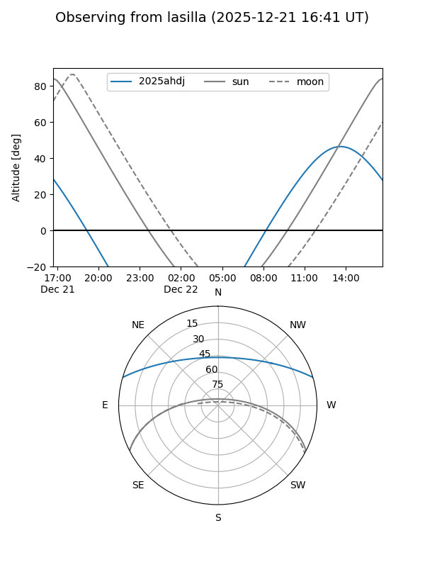
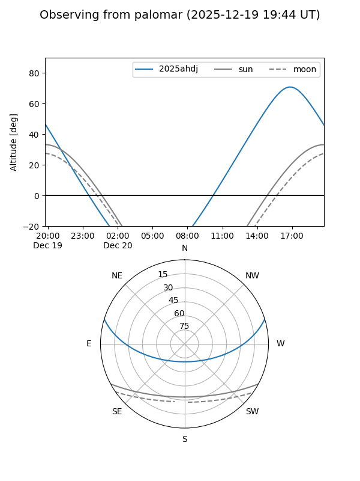

2025ahdj
Target 2025ahdj at 2025-12-18 11:18
Aliases and brokers:
FINK: fink-portal.org/ZTF25achxmsx
Lasair: lasair-ztf.lsst.ac.uk/objects/ZTF25achxmsx
ALeRCE: alerce.online/object/ZTF25achxmsx
TNS: wis-tns.org/object/2025ahdj
YSE: ziggy.ucolick.org/yse/transient_detail/2025ahdj
alt names
ZTF25achxmsx (ztf,fink_ztf)
2025ahdj (tns,yse)
Coordinates:
equatorial (ra, dec) = 224.8407,+14.36289
equatorial (HMS+DMS) = 14:59:21.76,+14:21:46.41
galactic (l, b) = (16.2339,+57.61032)
Photometry
last ztfr=19.19
2 ztfr detections
Lightcurve

Visibility


Additional plots